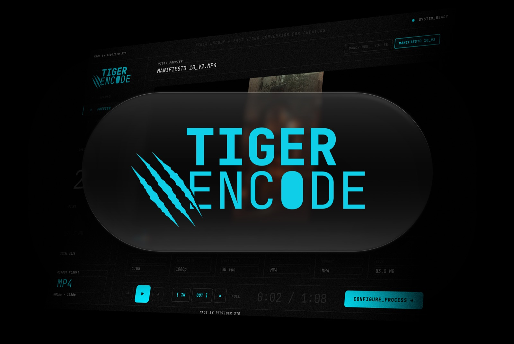
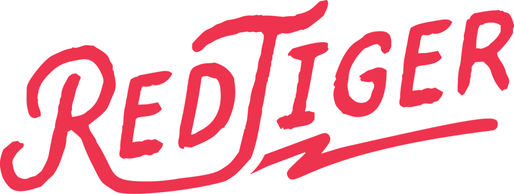
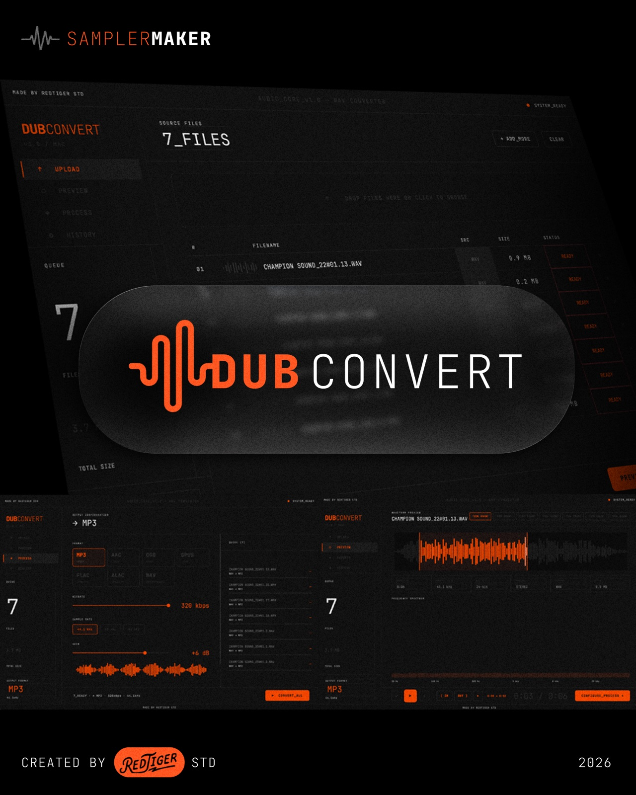
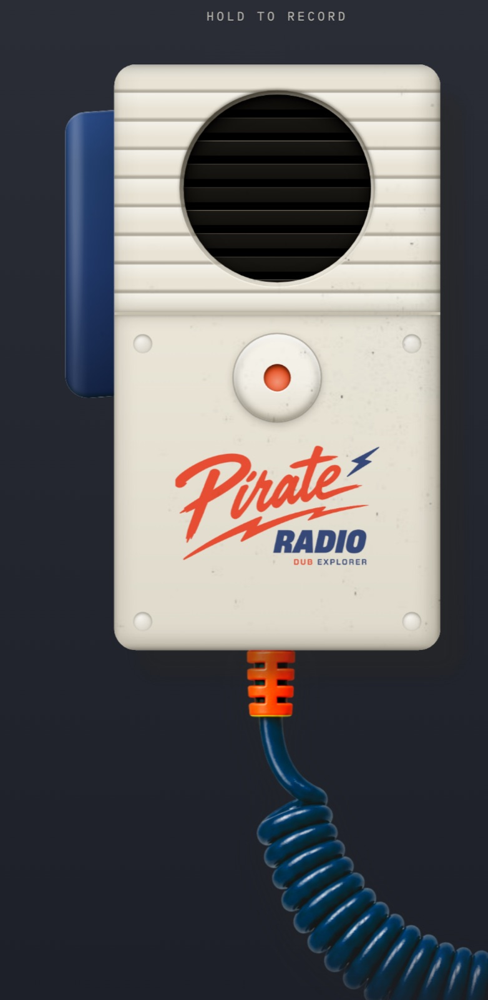
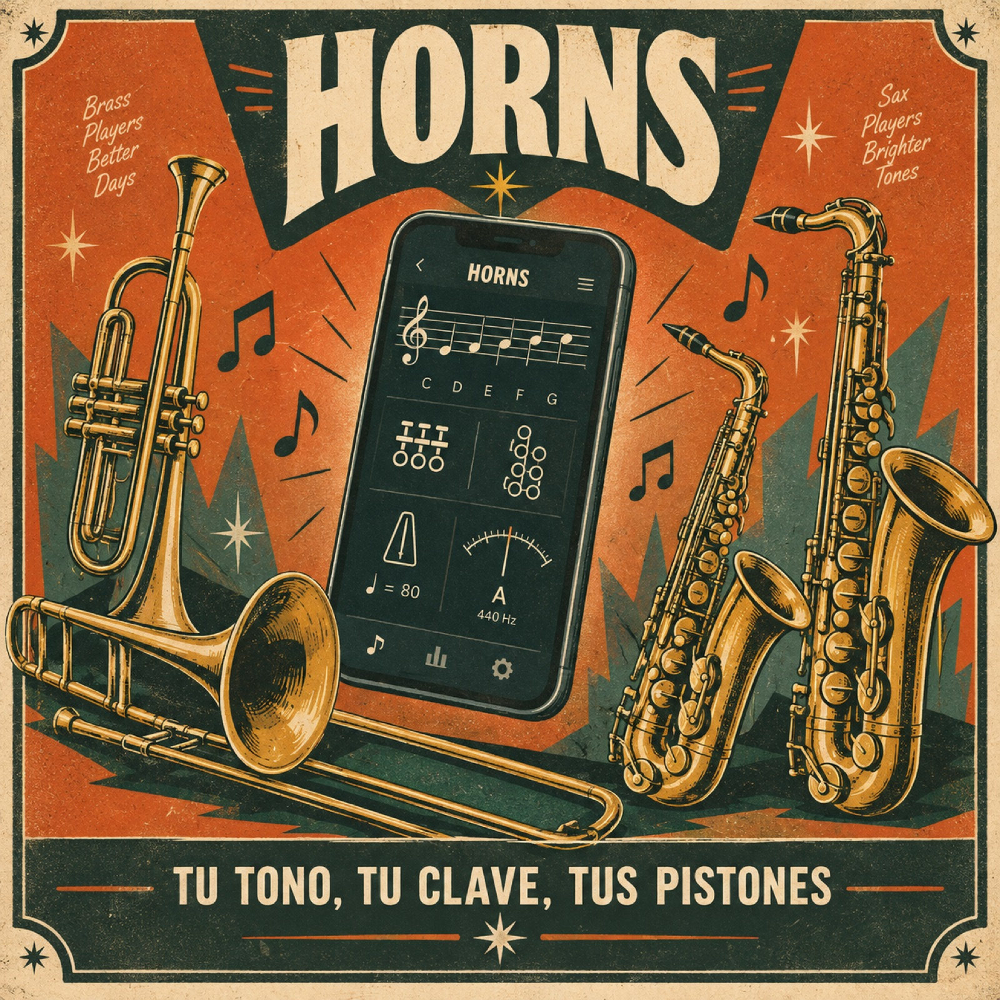

01
Tiger Encode
Conversor de video para macOS. Arrastras, eliges formato, conviertes. Preview integrado y cola para lotes grandes.
MP4 H.264H.265
ProResWEBM
GIF4K

Estudio de diseño y herramientas

StudioHacemos herramientas para gente que hace música y video — apps de escritorio que corren en tu máquina, sin nube y sin suscripción. Y el diseño que las envuelve.
Baja para ver ↓
Conversor de video para macOS. Arrastras, eliges formato, conviertes. Preview integrado y cola para lotes grandes.

Conversor de audio para macOS. Lotes completos en una sola ventana, con forma de onda y espectro de frecuencia.

Consola de dub en vivo dentro del navegador. Ocho canales, master con echo y reverb, sampler, MIDI y grabación. Sin instalar nada.

La escala escrita como tú la lees. Partitura, digitaciones, metrónomo y afinador en una pantalla, transpuesto a la clave de tu instrumento.
